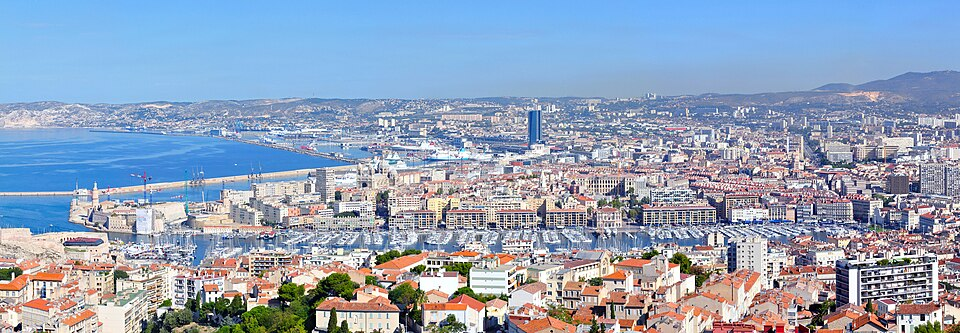
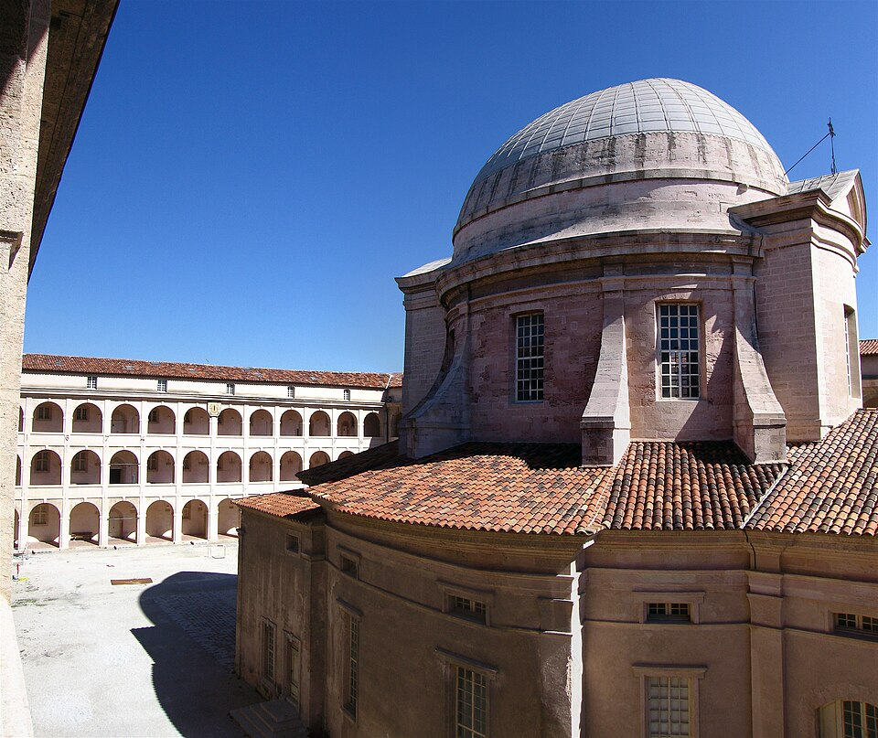
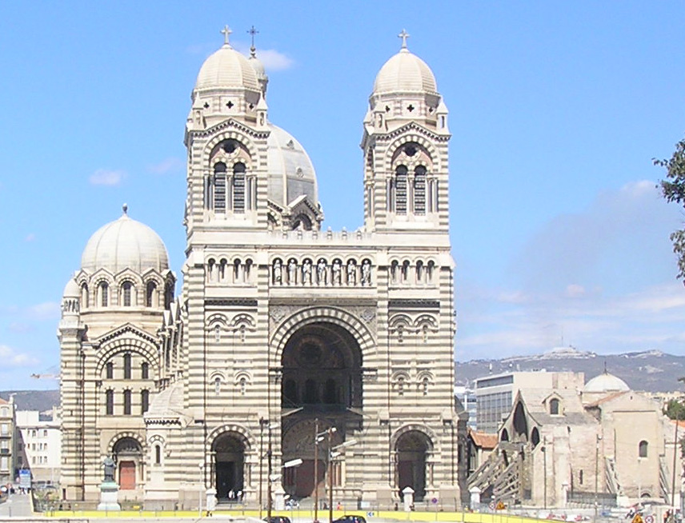
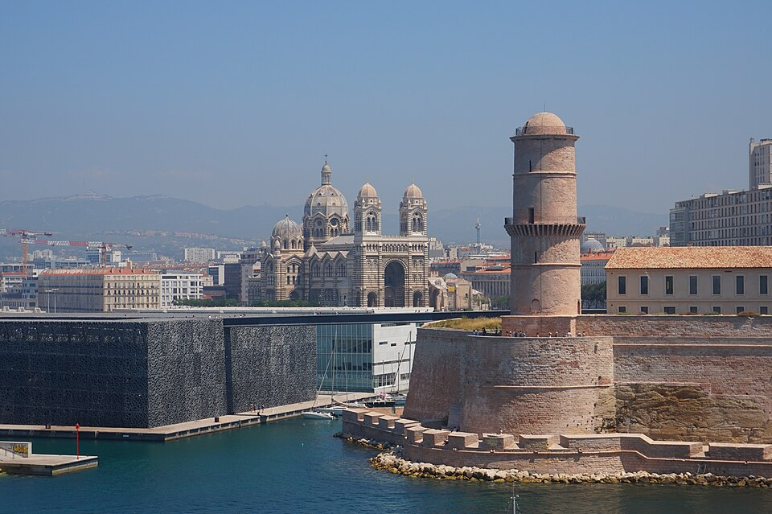
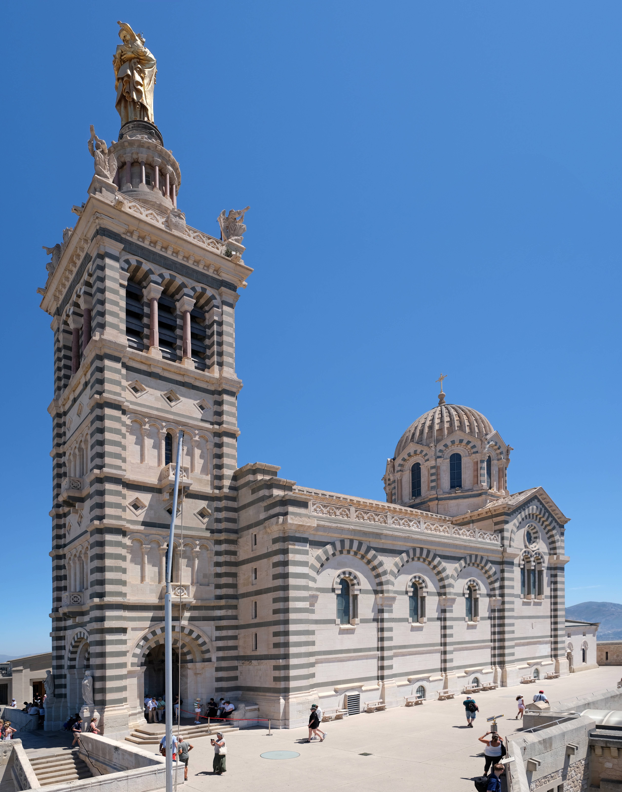
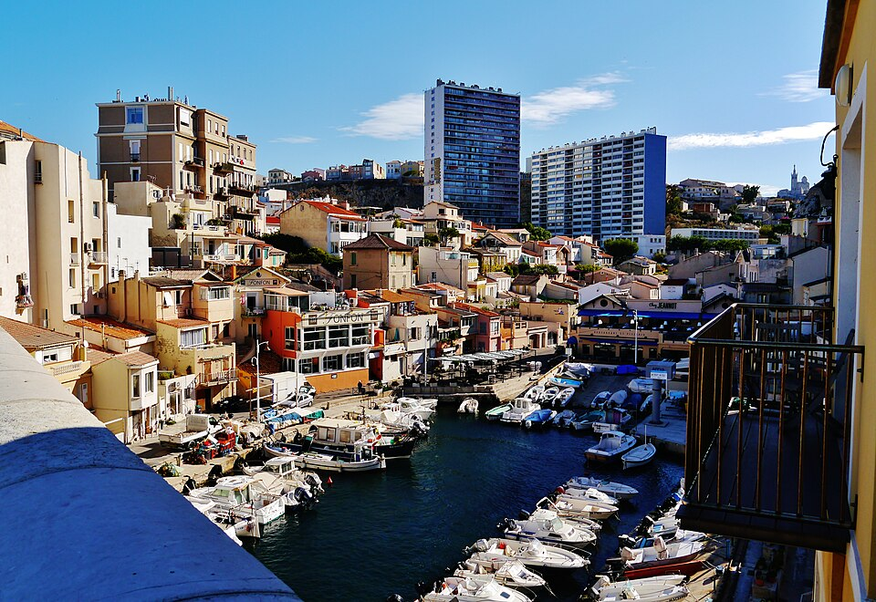
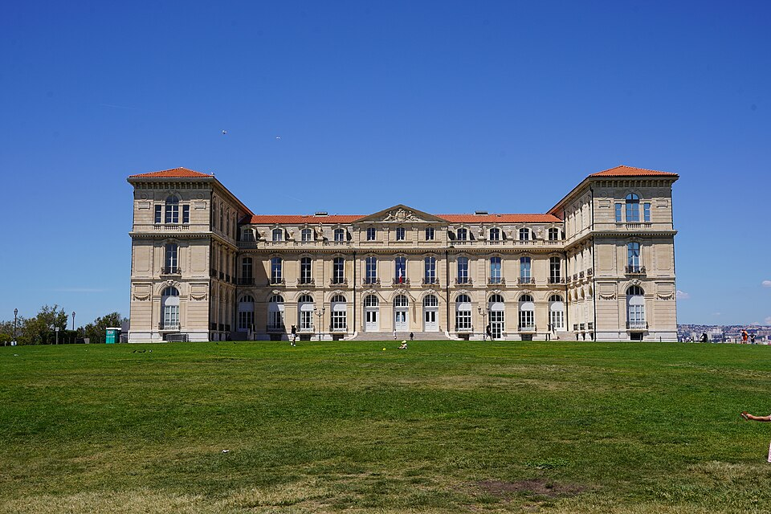

Tagesroute ab Euromed Center – Die wichtigsten Sehenswürdigkeiten
Adresse: Place Henri Verne / Boulevard de Dunkerque, 13002 Marseille
Von hier aus erreichst du alle Sehenswürdigkeiten bequem zu Fuß. Die Route ist so geplant, dass du nach einem Rundgang abends wieder in der Nähe deines Hotels bist.
Alle Stopps als Wegpunkte – zu Fuß navigierbar
🚶 Gesamte Route in Google Maps öffnen
Der Vieux-Port ist die Wiege Marseilles und einer der ältesten Häfen Europas. Um 600 v. Chr. landeten hier griechische Siedler aus Phokäa (heutige Türkei) in der Bucht „Lacydon" und gründeten die Handelskolonie Massalia. Über 2.600 Jahre später ist der Hafen immer noch das pulsierende Herz der Stadt – wenn auch heute Fischer statt Handelsgaleeren die Kais säumen.
Morgens findet hier der lebhafte Fischmarkt statt (bis ca. 13 Uhr), an dem Fischer ihren frischen Fang direkt vom Boot verkaufen. Seit 2013 überspannt Norman Fosters polierter Edelstahl-Baldachin (Ombrière) den Quai – eine 46×22 Meter große Spiegelfläche, die den Himmel und die Passanten reflektiert.
Highlights: Fischmarkt (morgens) • Ombrière / Miroir d'Eau von Norman Foster • Mini-Fähre „Ferry Boat" (seit 1880, kürzeste Überfahrt Frankreichs: 3 Min., 0,50 €) • Fort Saint-Nicolas & Fort Saint-Jean am Hafeneingang • Rathaus (Hôtel de Ville, 17. Jh.)

Le Panier (provenzalisch „der Korb") ist das älteste Viertel Marseilles – genau hier gründeten die Griechen 600 v. Chr. ihre Kolonie auf den Hügeln oberhalb des Hafens. Im Mittelalter wurde es zum Handwerkerviertel, im 20. Jahrhundert zum multikulturellen Schmelztiegel. Während der deutschen Besatzung 1943 wurde ein Großteil des Viertels gesprengt; nur die oberen Bereiche überlebten.
Heute ist Le Panier ein lebendiges Künstlerviertel mit Street Art an jeder Ecke, kleinen Ateliers, Seifen-Manufakturen und provenzalischen Boutiquen. Die engen, steilen Gassen mit bunten Fensterläden erinnern an ein südliches Dorf mitten in der Großstadt.
Highlights: Vieille Charité (Barockbau von Pierre Puget, 1671, heute Kulturzentrum & Museum) • Place des Moulins (früher standen hier 15 Windmühlen) • Montée des Accoules (Treppen mit Meerblick) • Maison Diamantée (Renaissancefassade) • Street Art & Savonnerie du Midi (traditionelle Seifenfabrik)

Die Cathédrale Sainte-Marie-Majeure – von den Marseillern schlicht „La Major" genannt – ist die einzige Kathedrale, die in Frankreich im 19. Jahrhundert errichtet wurde (zuvor hatte man 200 Jahre lang keine mehr gebaut!). Der Architekt Léon Vaudoyer entwarf sie im neo-byzantinischen Stil mit markanten grün-weißen Streifenmustern aus Carrara-Marmor und grünem Florentiner Stein.
Mit 142 Metern Länge zählt sie zu den größten Kathedralen Frankreichs. Direkt daneben steht die romanische „Vieille Major" aus dem 12. Jahrhundert – ein spannender Kontrast. Die Esplanade vor der Kathedrale bietet einen freien Blick aufs Meer und die vorgelagerten Inseln.
Highlights: Neo-byzantinisches Interieur mit Mosaiken & Marmor • 142 m Länge (eine der größten Kathedralen Frankreichs) • Gestreifte Fassade aus Carrara-Marmor • Daneben: romanische „Vieille Major" (12. Jh.) • Esplanade mit Meerblick • Kuppel: 70 m Höhe

Das MuCEM (Musée des Civilisations de l'Europe et de la Méditerranée) ist das erste Nationalmuseum außerhalb von Paris und wurde 2013 eröffnet, als Marseille Kulturhauptstadt Europas war. Der Architekt Rudy Ricciotti entwarf einen perfekten 72-Meter-Kubus, umhüllt von einer filigranen Betongitter-Fassade – das weltweit erste Gebäude, das in solchem Umfang ultrahochfesten Faserbeton (UHPFRC) verwendet.
Das Museum ist über eine spektakuläre Fußgängerbrücke mit dem Fort Saint-Jean (12. Jh.) verbunden, dessen Gärten mit mediterranen Pflanzen kostenlos zugänglich sind. Von der Dachterrasse des MuCEM bietet sich ein grandioser Blick auf Meer, Hafen und die Kathedrale.
Highlights: Architektur: Betongitter-Fassade (Rudy Ricciotti) • Passerelle: 130 m lange Hängebrücke zum Fort • Dachterrasse mit 360°-Meerblick • Fort Saint-Jean: Festung aus dem 12. Jh. mit Gärten (gratis!) • Wechselausstellungen zu mediterranen Kulturen • Buchhandlung & Restaurant mit Terrasse
Zeit für kulinarische Highlights! Die Bouillabaisse ist Marseilles Signature-Gericht – ein reichhaltiger Fischeintopf mit Rascasse, Drachenkopf und Safran, serviert mit Rouille und Croutons. Authentische Bouillabaisse kostet ab ca. 50 €/Person und muss oft vorbestellt werden.
Günstigere Alternativen: Panisse (knusprige Kichererbsen-Pommes), Navettes (Orangenblüten-Kekse) oder frische Meeresfrüchte-Platten. Am Quai des Belges findest du Restaurants mit Hafenblick, im Panier kleine Bistros mit mehr Charme und besseren Preisen.

Die „Bonne Mère" (gute Mutter) ist das Wahrzeichen Marseilles und seit über 800 Jahren ein Wallfahrtsort. Bereits 1214 ließ ein Priester namens Pierre hier eine kleine Kapelle errichten. Die heutige neo-byzantinische Basilika wurde ab 1853 nach Plänen des Architekten Henri-Jacques Espérandieu erbaut – der Bau dauerte über 40 Jahre.
Auf dem 157 Meter hohen Hügel thronend, wird die Kirche von einem 12,5 Meter hohen vergoldeten Glockenturm mit einer 9,7 Meter großen goldenen Madonnenstatue gekrönt. Das Innere beeindruckt mit farbenprächtigen Mosaiken und Ex-Voto-Tafeln (Dankgebete von Seeleuten). Von der Terrasse bietet sich ein atemberaubendes 360°-Panorama über Marseille, die Frioul-Inseln, das Château d'If und bei klarer Sicht bis zu den Calanques.
Highlights: 360°-Panorama über Marseille & Mittelmeer • Vergoldete Madonnenstatue (9,7 m hoch) • Byzantinische Mosaiken im Inneren • Ex-Voto-Tafeln & Schiffsmodelle (Dank der Seeleute) • Einschusslöcher von der Befreiung 1944 an der Fassade • Krypta im Fels • Meistbesuchtes Monument Marseilles (~2 Mio. Besucher/Jahr)

Die Corniche Kennedy ist Marseilles berühmte Küstenstraße – 5 km lang, zwischen 1848 und 1863 angelegt. Sie besitzt laut lokaler Legende die längste Sitzbank der Welt (ca. 3 km fast ohne Unterbrechung, seit 1965!). Von hier aus hast du atemberaubende Blicke auf die türkisfarbenen Buchten und die Frioul-Inseln.
Der Vallon des Auffes ist ein winziger, traditioneller Fischerhafen, der sich unter einer 60 Meter langen Brücke (Viadukt von 1863) versteckt. Der Name stammt von der „Auffe" – einem Gras, aus dem früher Schiffstaue geflochten wurden. Hier scheint die Zeit stehengeblieben zu sein: bunte Pointu-Boote, Fischernetze und kleine Restaurants mit frischer Bouillabaisse.
Highlights: Vallon des Auffes (versteckter Fischerhafen) • Viadukt-Brücke von 1863 (60 m) • „Längste Sitzbank der Welt" (3 km) • Plage des Catalans (Stadtstrand) • Kriegsdenkmal „Porte d'Orient" (1927, Historisches Monument) • Blick auf Frioul-Inseln & Château d'If • Pointu-Boote & authentische Fischrestaurants

1858 ließ Napoleon III. diesen eleganten Palast im Second-Empire-Stil für Kaiserin Eugénie errichten – auf einem Vorgebirge mit Panoramablick über den Hafeneingang. Kurioses Detail: Weder Napoleon noch Eugénie haben je hier gewohnt! Nach dem Sturz des Kaisers 1870 schenkte die Kaiserin den Palast der Stadt Marseille, die ihn 1904 zur Medizinischen Fakultät umbaute.
Heute ist der Park öffentlich zugänglich und ein beliebter Treffpunkt für Einheimische. Die Wiesen vor dem Palast bieten einen der schönsten Sonnenuntergänge der Stadt – mit dem Vieux-Port, Fort Saint-Jean und der leuchtenden Notre-Dame de la Garde als Kulisse.
Highlights: Sonnenuntergang über dem Vieux-Port (einer der besten Spots der Stadt!) • Panoramablick auf Hafeneingang, Fort Saint-Jean & Notre-Dame • Weitläufiger Park mit Wiesen (Picknick-freundlich) • Historischer Palast (1858, Napoleon III.) • Name „Pharo" stammt von „farot" – einem alten Ausguck auf dem Hügel (seit 14. Jh. auf Karten)
Zum Abschluss des Tages genießt du Meeresfrüchte oder provenzalische Küche mit Blick auf den erleuchteten Hafen. Ein Pastis zum Aperitif gehört dazu! Danach spazierst du in 15 Minuten zurück zum Euromed Center.
| # | Ort | Dauer | Gehzeit zum nächsten |
|---|---|---|---|
| 🏨 | Euromed Center (Start) | — | 10 Min. |
| 1 | Vieux-Port | 30–45 Min. | 10 Min. |
| 2 | Le Panier | 60–90 Min. | 10 Min. |
| 3 | Cathédrale de la Major | 20–30 Min. | 5 Min. |
| 4 | MuCEM & Fort Saint-Jean | 60–90 Min. | 10 Min. |
| 5 | Mittagessen | 60 Min. | 15 Min. (Bus) |
| 6 | Notre-Dame de la Garde | 60–90 Min. | 20 Min. |
| 7 | Corniche & Vallon des Auffes | 45–60 Min. | 15 Min. |
| 8 | Palais du Pharo | 30 Min. | 10 Min. |
| 9 | Abendessen Vieux-Port | Abend | 15 Min. zum Hotel |
Gesamte Gehstrecke: ca. 9–11 km
Klicke unten, um die Route mit allen Wegpunkten in Google Maps zu öffnen:
🗺️ Route in Google Maps öffnen